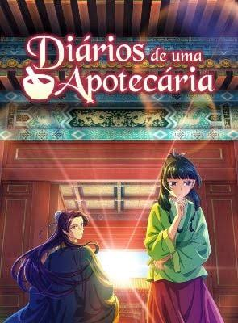

.jpg)

Diários de uma apotecaria
Mistério, drama, romanceDiários de uma Apotecária (Kusuriya no Hitorigoto) acompanha Maomao, uma jovem inteligente e especialista em ervas, venenos e medicina que é sequestrada e vendida como serva no palácio interno do imperador.
AssistirAvaliação ⭐⭐⭐⭐⭐
.jpg)
Cyberpunk 2077: edgerunners
Ficção científica, ação, drama e cyberpunkAcompanha David Martinez, um jovem de rua em Night City que perde tudo após uma tragédia familiar e decide se tornar um mercenário cibernético para sobreviver.
AssistirAvaliação ⭐⭐⭐⭐⭐
.jpg)
Duna
Ficção científicaacompanha Paul Atreides, um jovem brilhante herdeiro da Casa Atreides, que precisa viajar para o planeta mais perigoso do universo para garantir o futuro de sua família e de seu povo.
AssistirAvaliação ⭐⭐
.jpg)
Crepúsculo
Fantasia, romance e drama sobrenatural adolescenteBella Swan se muda para a chuvosa cidade de Forks para morar com o pai e se apaixona por Edward Cullen, um misterioso colega de escola que é, na verdade, um vampiro.
AssistirAvaliação ⭐
.jpg)
One Punch Man
Ação, comédia, paródia e super-heróiSaitama é um homem comum que ficou superpoderoso e careca após treinar intensamente por três anos, tornando-se capaz de derrotar qualquer inimigo com um único soco.
AssistirAvaliação ⭐⭐⭐
.jpg)
Overflow
Tchaca Tchaca na botchacaÉ um anime de comédia romântica sobre um relacionamento de três pessoas
AssistirAvaliação ⭐⭐⭐⭐⭐
.jpg)
Boku no Hero
Ação, aventura, fantasia científica e comédia dramáticaSe passa em um mundo onde cerca de 80% da população possui superpoderes, conhecidos como "individualidades" ou "quirks"
AssistirAvaliação ⭐⭐⭐